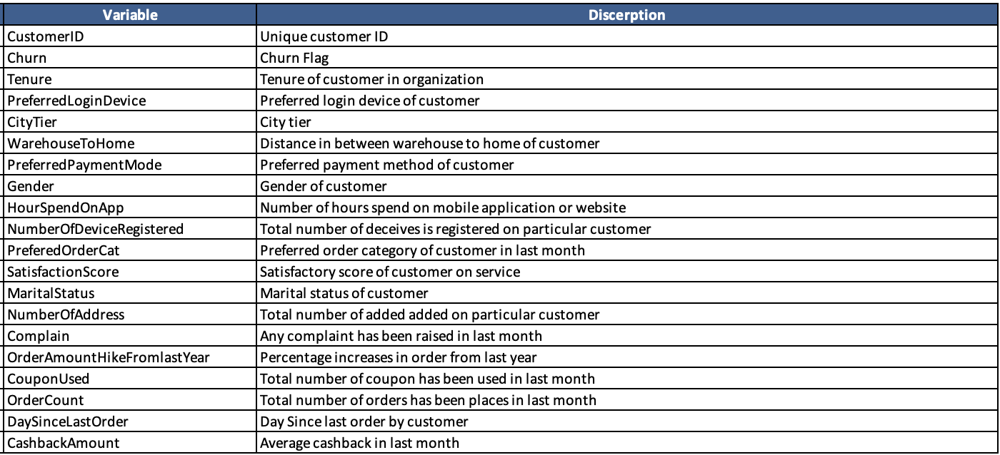
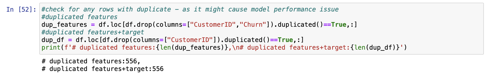
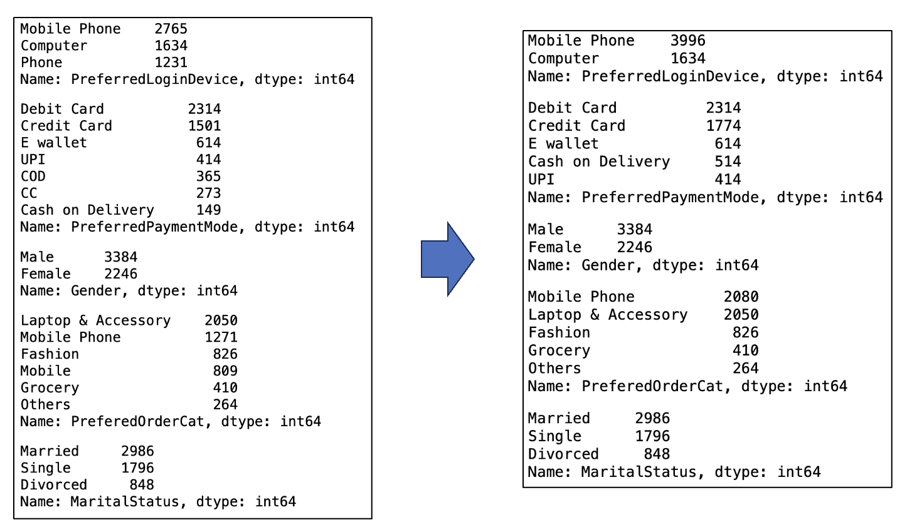
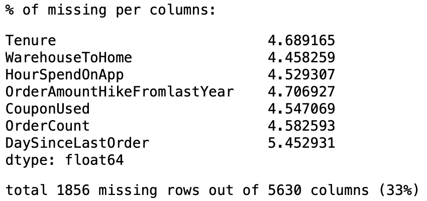
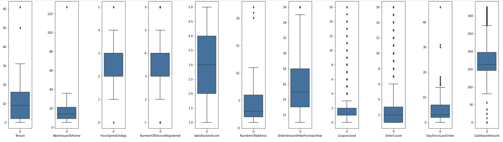
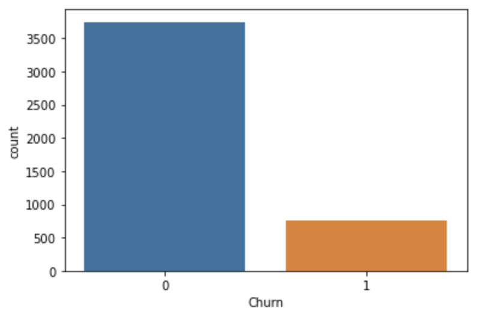
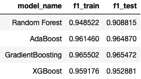
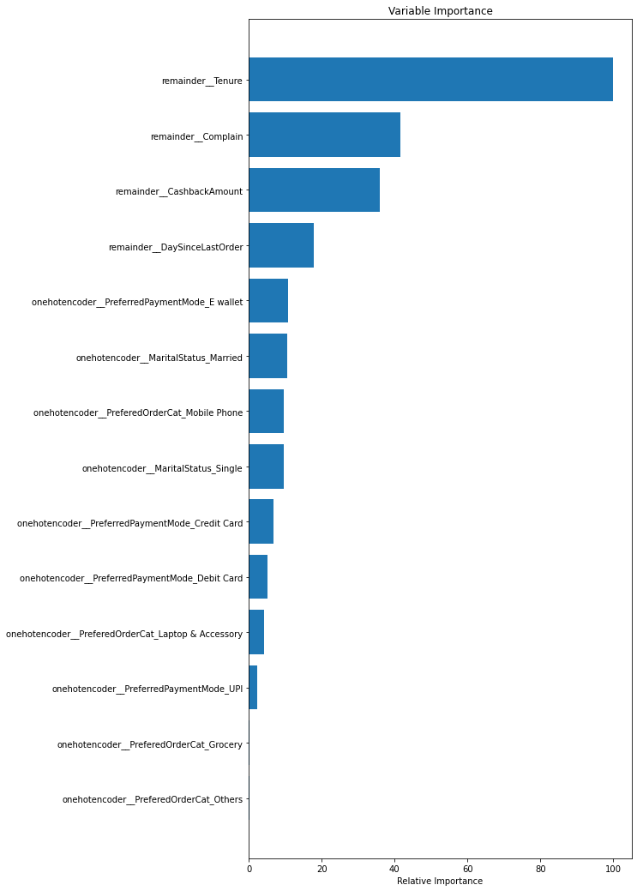

E-Commerce Website Analysis
Understanding factors affecting e-commerce website's customer churn.

Background
In the E-commerce industry, customer data is a crucial success factor. One field in which this can help is understanding customer churn. Churn, which is the rate at which customers discontinue their engagement with an e-commerce business, has a significant impact on overall company health. High churn rates can lead to revenue loss, reduced customer loyalty, and increased marketing costs to acquire new customers. By analyzing factors affecting churn, an e-commerce company gains valuable insights into customer behaviour and preferences. This understanding allows the business to tailor its marketing strategies, improve customer experience, and develop targeted retention initiatives, and ultimately build lasting relationships, fostering a more sustainable and thriving online enterprise. For this project, we used an e-commerce customer data to understand the factors affecting churn and to build a prediction model to help the company flag customers that is more likely to churn.
Data
Data was retrieved from Kaggle, ccontaining customer data with known variables shown below. Data cleaning was done and both the complete script and cleaned data can be found on my GitHub repository.
Methodology
Data Cleaning
Below is the list of preprocessing steps done before the model-building stage:
Duplicate Entry
There are different customers with duplicated features. However, considering the business domain this duplication is possible to happen by chance and not due to data input issues. In addition, target data is consistent for each duplicate, so the duplicate was left as is.
Data Consistency
Both numerical and categorical data were checked for consistency and assuming the context of the data being customer data of e-commerce platform a few issues were found from categorical data where the same categories were entered using different names:
- PreferredLoginDevice: mobile phone recorded as both "Phone" and "Mobile Phone"
- PreferredPaymentMode: credit card recorded as both "Credit Card" and "CC" & cash on delivery recorded as both "COD" and "Cash on Delivery"
- PreferedOrderCat: mobile phone recorded as both "Mobile" and "Mobile Phone"
To resolve this issue, entries were standardized into the same name as follows:
Missing Data
Missing data was observed from columns stated below with percentage missing of ~5% for each column, therefore data was considered sufficient not to remove from the analysis. Considering the total missing rows from all the rows summed up to 33% of the whole dataset, imputation was done for the missing data. For this project, considering data distribution, simple imputation using median value was used.
Data Exploration
Data was split into train and test set at 80:20 ratio and findings are further elaborated below
Outlier Data
Checking the distribution of numerical data using the boxplot, some outliers were observed, and extreme outliers were removed from the training data set with the boxplot as a guide. In this case, outlier was observed for 'CashbackAmount', 'Tenure', 'WarehouseToHome', 'NumberofAddress', and 'DaySinceLastOrder'
Class Imbalance
Checking on the distribution of target class (churn/no churn), there are significantly more no churn data than churn. This might cause the prediction model to skew towards predicting no churn. Therefore, oversampling was done to the churn data using SMOTE.
Correlation to Churn
Both numerical and categorical features were checked for correlation with churn and features found to be correlated to churn was used for modelling. Result is elaborated further in subsequent section.
Churn Prediction Model
Churn classification was trained using Random Forest, AdaBoost, Gradient Boosting, and XGBoost Classification model with 5-Fold cross validation using training data. Then hyperparameter was tuned for each of the model to improve the model performance. Finally, the score of the test data was calculated to approximate model performance in production environment and to choose the best model. F1 score was used as the metric to assess model performance, as a balance between precision and recall was needed in the business problem.
Result
Factors Affecting Churn
- PreferedOrderCat: for Mobile Phones, more churn was seen from both count/proportion relative to other categories.
- MaritalStatus: Single customers have higher churn, despite married people being the main customer base.
- Complain: Customers who complained are more likely to churn
- PreferredPaymentMode: Customers paying using card (Debit/Credit) less likely to churn
- Tenure: the customers who churned are concentrated at low tenure.
- CashbackAmount: churn/no churn proportion increases as CashbackAmount decreases. However this observation does not hold for the small proportion of customers with CashbackAmount less than 100
- DaySinceLastOrder: churn/no churn proportion increases as DaySinceLastOrder decreases.
Churn Prediction Model Performance
Using the above 7 features, multiple models were trained (Random Forest, AdaBoost, Gradient Boosting, and XGBoost). Overall, based on the F1 score, Gradient Boosting model is the best model among the model tested with F1 score of 0.9655 from both train and test dataset.
Below are the importance of the features to churn in descending order
Closing Remark
The eCommerce landscape is competitive and the cost of acquiring a new customer is more expensive than retaining a customer. In this project, data exploration and prediction models were developed to help identify a potential churn customer. Factors affecting churn were explored and it was concluded that the Gradient Boosting Classifier model can assist best out of tested models in this aspect.